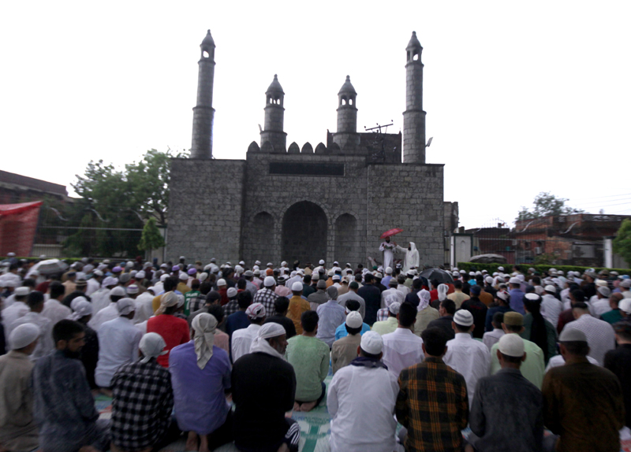
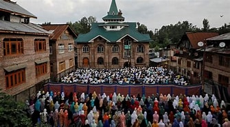
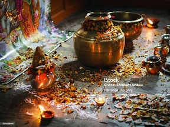
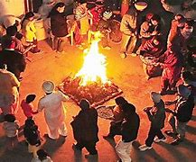
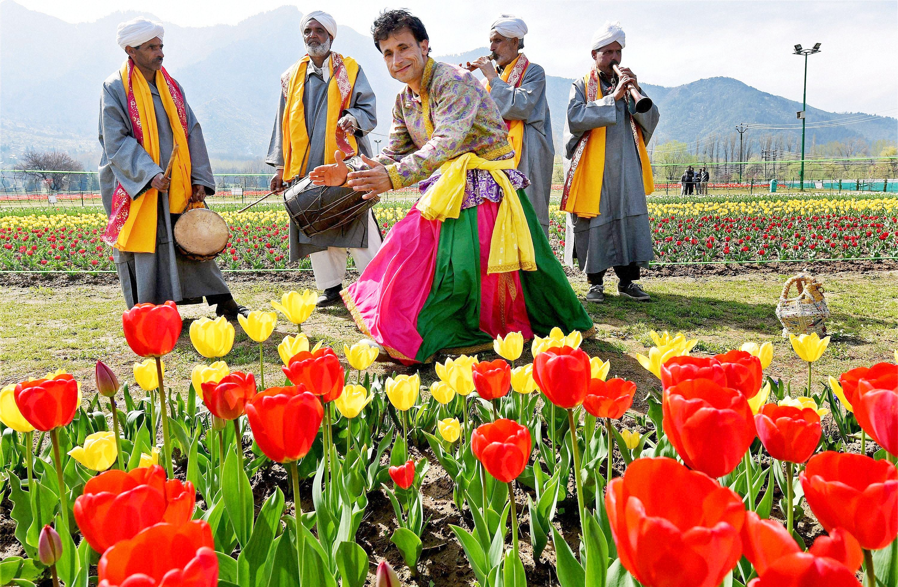

Jammu and Kashmir, known for its rich cultural heritage, celebrates a variety of festivals throughout the year. These festivals reflect the diverse traditions and religions of the region.
Religious Festivals
Id-ul-Fitr:
Celebrated by the Muslim community after Ramadan.
Involves prayers, feasting, and charity.
Id-ul-Azha:
Also known as Bakra Eid, it commemorates the willingness of Ibrahim (Abraham) to sacrifice his son.
Involves the sacrifice of animals and communal feasting.
Maha Shivratri:
A significant Hindu festival dedicated to Lord Shiva.
Celebrated with night-long vigils and prayers, especially at temples like the famous Shankaracharya Temple.



Cultural Festivals
Lohri:
Lohri is a vibrant and widely celebrated festival in Jammu and Kashmir, marking the end of winter and the onset of longer days.
Traditionally observed on January 13th, it holds special significance for the region's agricultural communities.
Baisakhi:
Marks the start of the harvest season, celebrated with traditional dances and festivities.
Baisakhi is a significant festival celebrated in Jammu and Kashmir, as well as in other parts of India, particularly by the Sikh community.
It marks the harvest season and is observed on April 13 or 14 each year.
Tulip Festival:
The Tulip Festival in Jammu and Kashmir is a spectacular annual event held in Srinagar, showcasing the breathtaking beauty of tulip gardens.
It typically takes place in early April, aligning with the blooming season of tulips, and is one of the largest flower festivals in Asia.


